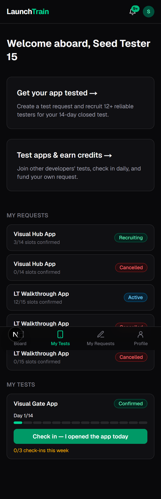
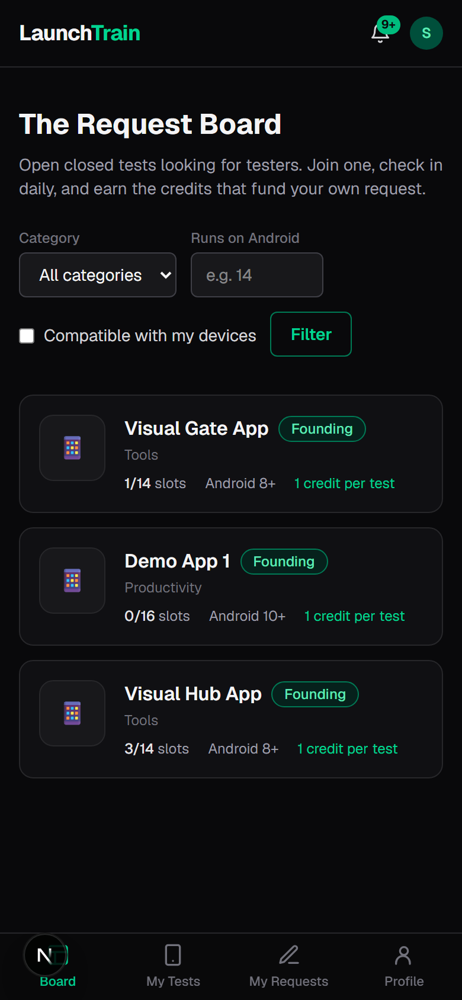
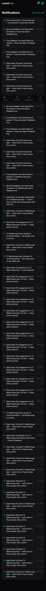
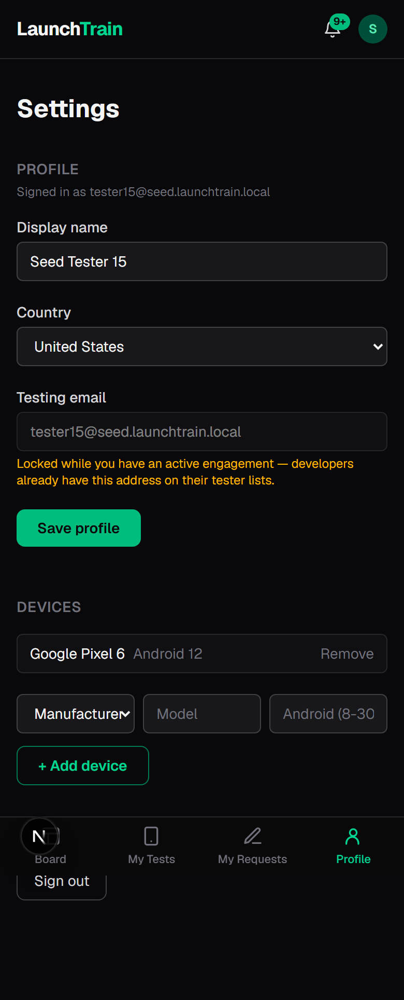
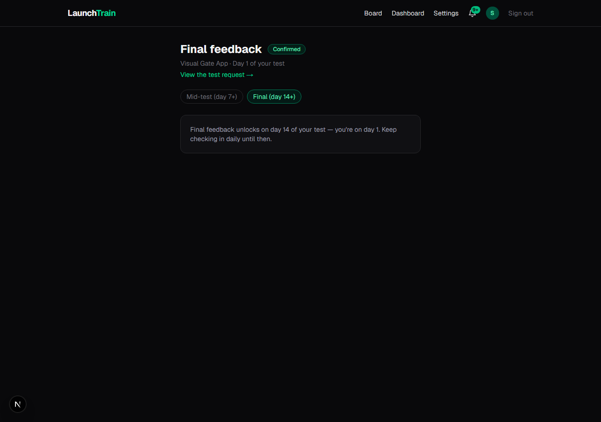
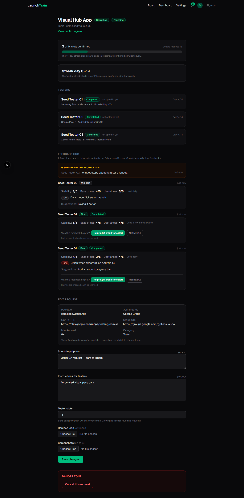
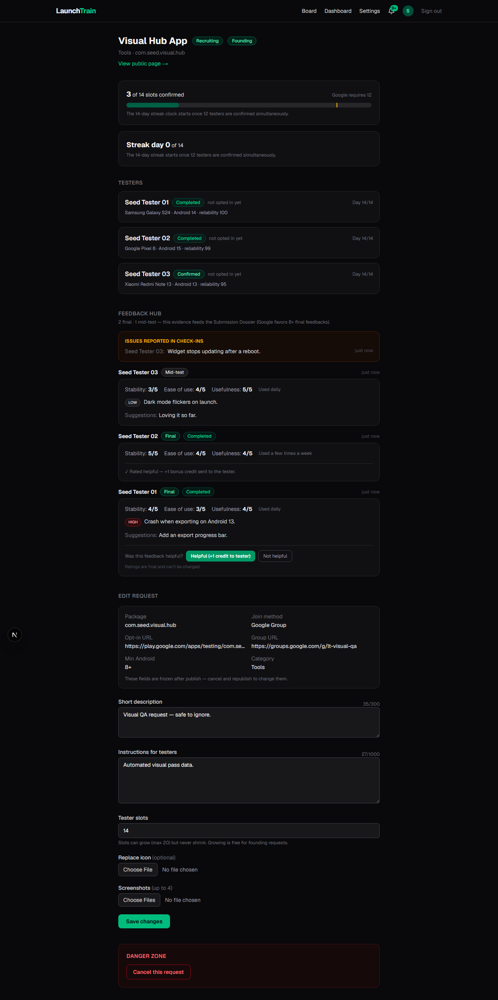
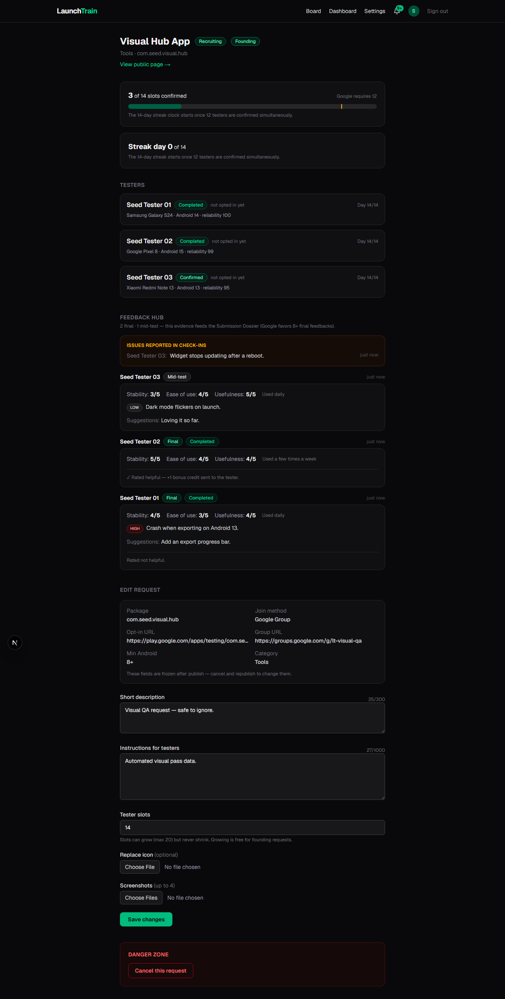
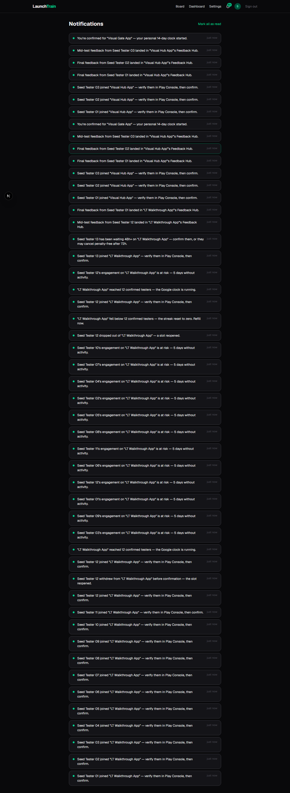

Authenticated as seed tester15 via a service-role-minted session. Items 1 / 4 / 7 / 8 of the F4 manual checklist.
01-mobile-dashboard.png — Mobile /dashboard — stacked sections, live check-in card, bottom nav
PASS: signed in (true) + bottom nav visible (true)

02-mobile-board.png — Mobile /board — cards + bottom nav, header collapsed to logo/bell/avatar
PASS: board heading (found: "The Request Board")

03-mobile-notifications.png — Mobile /notifications — list + bottom nav
PASS: notifications heading (found: "Notifications")

04-mobile-settings.png — Mobile /settings — Profile tab target, Sign out at the bottom
PASS: sign out button (found: "Sign out")

05-feedback-gate-day14.png — Final feedback gate — tester15 on day 1 of Visual Gate App
PASS: gate message visible (true)

06-hub-before-rating.png — Feedback Hub — 2 finals (completed chips) + 1 mid + issue box, unrated
PASS: hub heading (true) + 2 helpful buttons

07-hub-rated-helpful.png — After clicking Helpful — '+1 bonus credit sent' confirmation
PASS: helpful confirmation rendered

08-hub-rated-not-helpful.png — Second final rated Not helpful — muted state, no bonus
PASS: not-helpful state rendered

09-notifications-sweep.png — Notifications sweep — tester_joined ×4, feedback_received ×3 with links
PASS: feedback rows visible (true)
